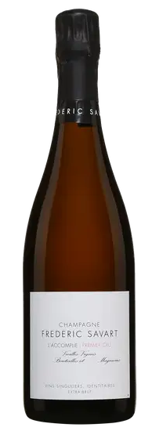
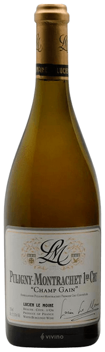
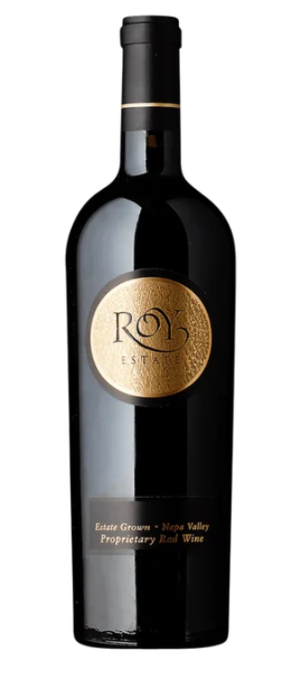
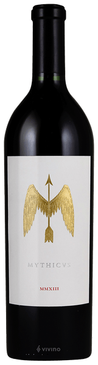

| 대륙 분류 | 구대륙 (Old World) |
| 생산 국가 | 프랑스 (France) |
| 세부 생산지 | 샹파뉴 (Champagne) > 몽타뉴 드 랭스 > 에퀴이 & 빌리에르-오-뇌드 |
| 품종 및 비율 | 피노 누아 (Pinot Noir) 80%, 샤도네이 (Chardonnay) 20% |
| 입수 난이도 | 상 (Level 3) |
| 전문가 평점 | RP 93 pt, 전 세계 컬트 샴페인 마니아들의 열광적인 지지를 받는 RM 샴페인 |

| 대륙 분류 | 구대륙 (Old World) |
| 생산 국가 | 프랑스 (France) |
| 세부 생산지 | 부르고뉴 > 코트 드 본 > 퓔리니 몽라셰 > 레 샹 갱 |
| 품종 및 비율 | 샤도네이 (Chardonnay) 100% |
| 입수 난이도 | 상 (Level 3) |
| 전문가 평점 | WA 93-95 pt, JS 95 pt (압도적인 텍스처와 긴 여운을 자랑하는 그레이트 빈티지) |

| 대륙 분류 | 신대륙 (New World) |
| 생산 국가 | 미국 (USA) |
| 세부 생산지 | 캘리포니아 > 나파 밸리 (Napa Valley) > 소다 캐니언 |
| 품종 및 비율 | 카베르네 소비뇽, 메를로, 카베르네 프랑 블렌딩 |
| 입수 난이도 | 최상 (Level 4) |
| 전문가 평점 | RP 96 pt, VN 94 pt (필립 멜카의 정수가 담긴 나파 밸리 숨은 컬트 명작) |

| 대륙 분류 | 신대륙 (New World) |
| 생산 국가 | 미국 (USA) |
| 세부 생산지 | 캘리포니아 > 나파 밸리 > 욘트빌 (Yountville) > 파라다이스 힐 |
| 품종 및 비율 | 카베르네 소비뇽 (Cabernet Sauvignon) 100% |
| 입수 난이도 | 최상 (Level 4) |
| 전문가 평점 | RP 98-100 pt 잠재력 (파커 만점을 수차례 석권한 나파 최정상 플래그십 컬트) |